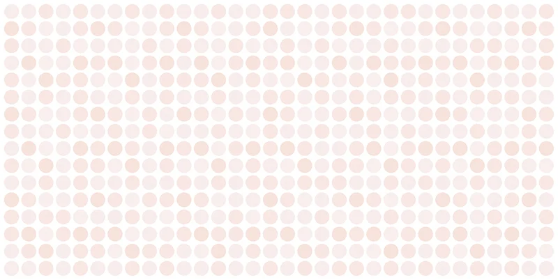
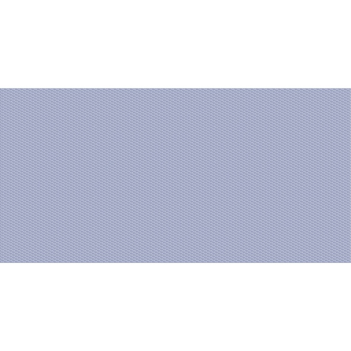
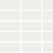
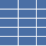
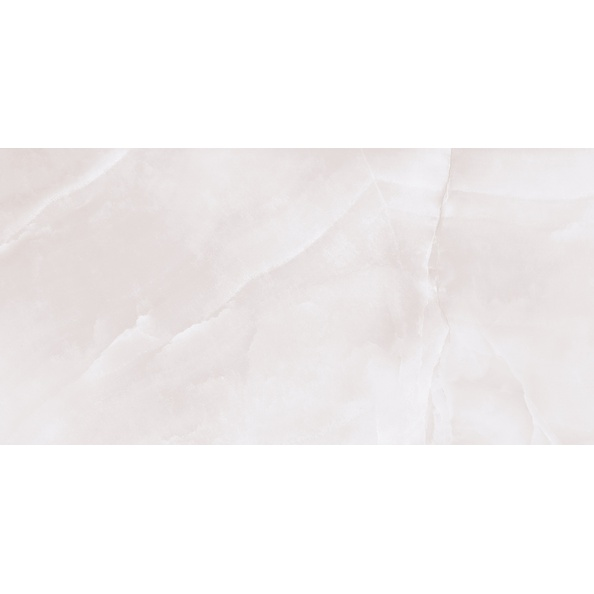
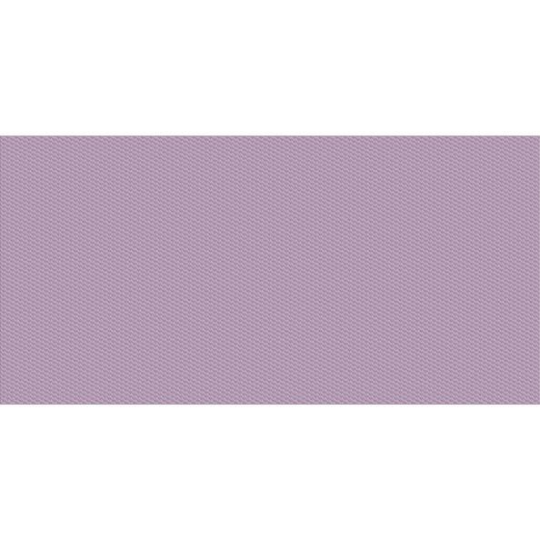

Плитка и керамогранит 500×250 мм в наличии в СПб
Подборка керамической плитки размера 500×250 мм, которые сейчас опубликованы в складском каталоге. В карточках указаны фактические названия, производители, сорта, артикулы и складские остатки.
21 позицийСуммарный остаток: 14 158 м²
Производители в подборке: Нефрит-Керамика (20). Остатки по складскому каталогу на 1 октября 2026 года; подтвердите перед заказом. Наличие доставки и её стоимость согласуются по адресу объекта.
Товары размера 500×250 мм
Джойс Светлый500 × 250 × 9 мм, Нефрит-Керамика, СтандартВ наличии 7 293 м²Артикул: 00-00-5-10-00-20-3030580 ₽/м²Дрим Белый500 × 250 × 9 мм, Нефрит-Керамика, СтандартВ наличии 1 155 м²Артикул: 00-00-5-10-00-00-3080559 ₽/м²

Глэдис Бежевый500 × 250 × 9 мм, Нефрит-Керамика, СтандартВ наличии 828 м²Артикул: 00-00-5-10-00-11-3055288 ₽/м²Джойс Бирюзовый500 × 250 × 9 мм, Нефрит-Керамика, СтандартВ наличии 598 м²Артикул: 00-00-5-10-01-71-3030626 ₽/м²Джойс Синий500 × 250 × 9 мм, Нефрит-Керамика, СтандартВ наличии 562 м²Артикул: 00-00-5-10-01-65-3030626 ₽/м²Джойс Розовый500 × 250 × 9 мм, Нефрит-Керамика, СтандартВ наличии 546 м²Артикул: 00-00-5-10-01-41-3030626 ₽/м²
Дрим Голубой500 × 250 × 9 мм, Нефрит-Керамика, СтандартВ наличии 531 м²Артикул: 00-00-5-10-01-61-3080626 ₽/м²Джойс Бирюзовый500 × 250 × 9 мм, Нефрит-Керамика, ПКВ наличии 505 м²626 ₽/м²
Однотонная Белый Матовая500 × 250 × 9 мм, Нефрит-Керамика, СтандартВ наличии 472 м²Артикул: 00-00-4-10-00-01-000559 ₽/м²Sens Light Серый500 × 250 × 9 мм, Нефрит-Керамика, ОптимумВ наличии 368 м²Артикул: 00-00-7-10-00-06-3185626 ₽/м²Paradise White Белый500 × 250 × 9 мм, Нефрит-Керамика, ОптимумВ наличии 264 м²Артикул: 00-00-7-10-00-00-3165626 ₽/м²Джойс Коричневый500 × 250 × 9 мм, Нефрит-Керамика, СтандартВ наличии 224 м²Артикул: 00-00-5-10-01-15-3030626 ₽/м²Interni Grey Серый500 × 250 × 9 мм, Нефрит-Керамика, ОптимумВ наличии 173 м²Артикул: 00-00-7-10-00-06-3195626 ₽/м²
Oslo Синий500 × 250 × 9 мм, СтандартВ наличии 124 м²Артикул: 00-00-5-10-31-65-1080626 ₽/м²
Эмилия Бежевый500 × 250 × 9 мм, Нефрит-Керамика, СтандартВ наличии 120 м²Артикул: 00-00-5-10-00-11-3040559 ₽/м²Atlantic Light Белый500 × 250 × 9 мм, Нефрит-Керамика, ОптимумВ наличии 99 м²Артикул: 00-00-7-10-00-00-3150626 ₽/м²Artdeco White Белый500 × 250 × 9 мм, Нефрит-Керамика, ОптимумВ наличии 86 м²Артикул: 00-00-7-10-00-00-3170626 ₽/м²Касл Серый500 × 250 × 9 мм, Нефрит-Керамика, ОптимумВ наличии 69 м²Артикул: 00-00-7-10-00-06-1055626 ₽/м²Джойс Синий500 × 250 × 9 мм, Нефрит-Керамика, ПКВ наличии 68 м²626 ₽/м²
Дрим Лиловый500 × 250 × 9 мм, Нефрит-Керамика, СтандартВ наличии 43 м²Артикул: 00-00-5-10-01-51-3080626 ₽/м²Фреш Белый500 × 250 × 9 мм, Нефрит-Керамика, ОптимумВ наличии 30 м²Артикул: 00-00-7-10-10-00-330626 ₽/м²Нужен расчёт для объекта?
Напишите выбранные позиции и площадь объекта. Уточним актуальные остатки, цену и варианты отгрузки.
Запросить расчёт по почте